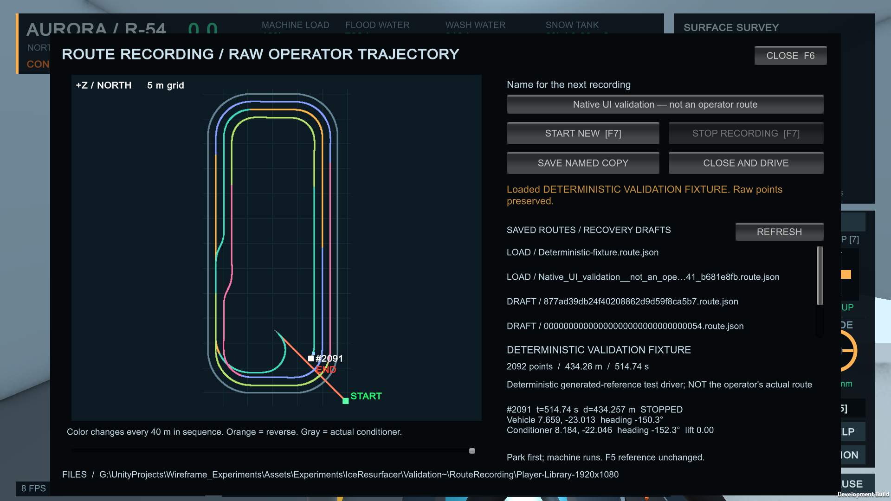
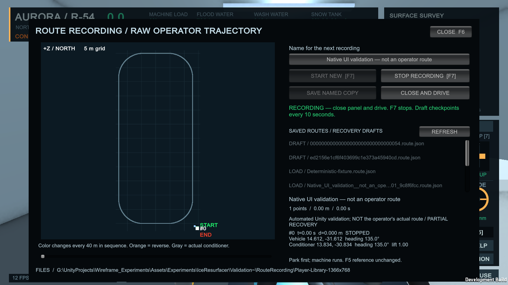

DETERMINISTIC VALIDATION FIXTURE — NOT THE OPERATOR'S ACTUAL ROUTE
The preview below is an actual standalone-player framebuffer. Its path was recorded through deterministic control inputs following part of the existing reference route. It is test data: 2,092 raw observations, 434.257 m, 514.74 simulated seconds. No real operator route is claimed.
For a real take: choose Free Simulation / Practice, open RECORDER F6, name it and Start New. Close and drive the complete route normally; F7 stops. Inspect the sequence slider and Save Named Copy. After Play Mode, use Experiments → Ice Resurfacer → Route Recordings or load it again in F6.
Colors advance every 40 m in sequence. Orange indicates reverse travel, gray is the actual conditioner path, green marks START and red marks END. No smoothing or reordering is applied.


Full preview at 1366 × 768 · Point inspection at 1920 × 1080 · Raw overhead image
Inspectable fixture JSON · Unity recorder checks · Fresh-process persistence · Integrated Unity regressions · Core simulation checks · Native controls at 1366 × 768 · Native controls at 1920 × 1080 · Preservation audit
Next steps require a real operator recording. Route editing, resumed takes, pass naming, map matching and sophisticated live guidance are intentionally outside this pass.